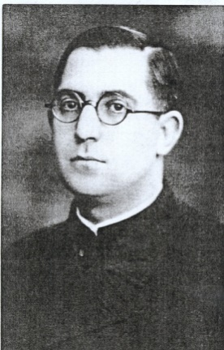

¿Quién fue?
Francisco Carceller Galindo fue un sacerdote español perteneciente a la Orden de los Clérigos Regulares de las Escuelas Pías, conocidos como escolapios. Nació en Forcall, Castellón, el 3 de octubre de 1901, dentro de una familia profundamente religiosa. Varios de sus hermanos también eligieron la vida religiosa. Desde pequeño tuvo problemas en una de sus piernas, que terminó quedándole rígida. Sin embargo, esta dificultad física no le impidió desarrollar su vocación ni dedicarse a la educación. Ingresó en las Escuelas Pías y dedicó gran parte de su vida a la enseñanza y a la formación religiosa de los jóvenes. Fue sacerdote, profesor y educador hasta su muerte en 1936.
